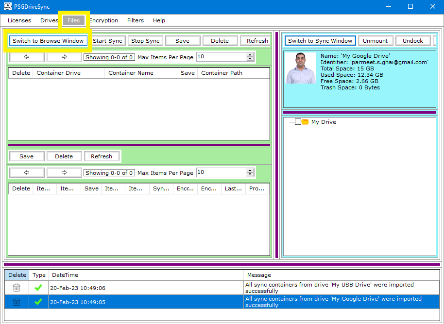

"Switch To Browse" window allows you to switch to browse mode on the currently mounted and docked drive where you can view the drive information along with all the files and folders contained in that drive in a tree like hierarchical structure. This is also the window where all the real time file operations are performed on files and folders. Following are the steps needed to be performed in order to switch to browse more for a mounted and docked drive.
|
1 |
Go to "Files" window and click on "Switch To Browse Window" button on the control bar of the drive that you need to work with. |
 |
|
2 |
Here you can access all the drive information, view all files and folders in the drive and perform real time file operations on them. More details can be found at Files - Browse Mode |